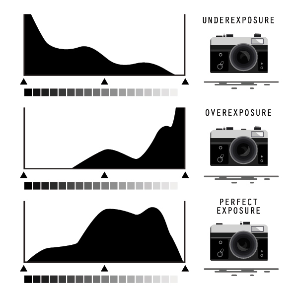
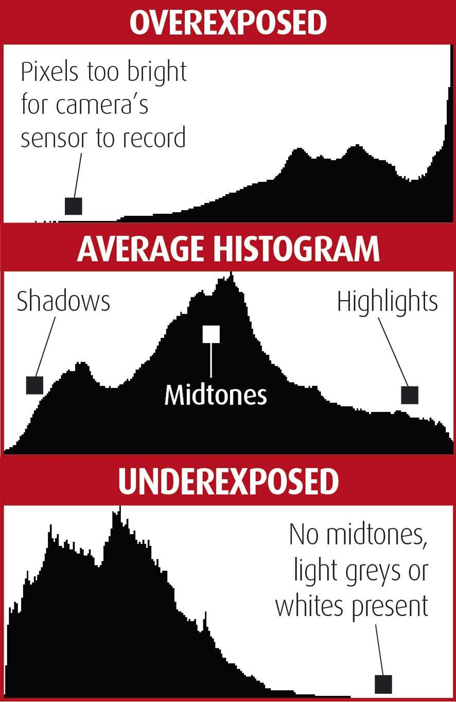
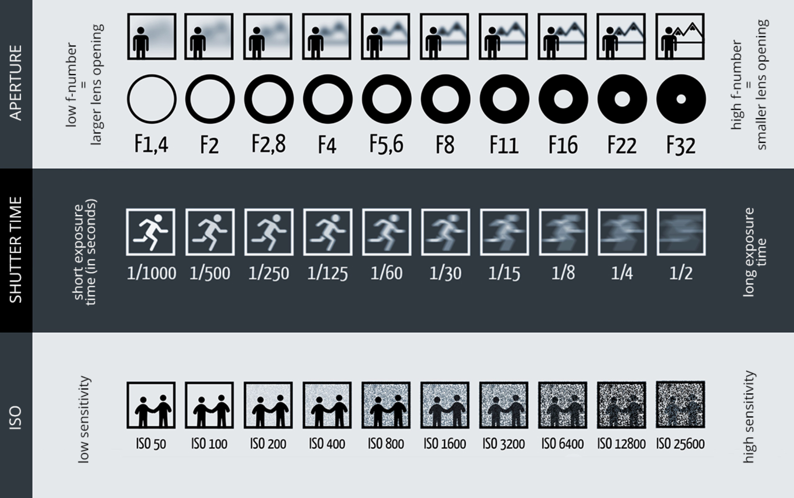
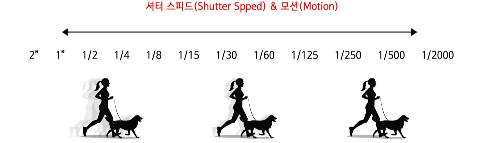

히스토그램 분석 실습

Analysis
톤 분포를 통한 노출 상태 진단 및 최적화
노출 제어
Aperture
f/1.4 ~ f/22
Shutter
1/1000 ~ 30s
ISO
100 ~ 6400
조리개(Aperture): F-stop 값으로 조절, 피사계 심도에 영향
셔터 스피드(Shutter): 속도로 조절, 모션 블러에 영향

Analysis
히스토그램 해석 가이드
히스토그램을 통한 노출 상태 진단 및 최적화 방법
노출 부족
적정 노출
과다 노출
노출 비교 분석
시각적 차이와 디테일 손실 패턴 이해
실시간 히스토그램
톤 분포 시각화와 클리핑 감지

Aperture
조리개와 노출
F-stop 값이 노출과 피사계 심도에 미치는 영향

Shutter Speed
셔터 스피드와 노출
셔터 속도가 노출과 모션 블러에 미치는 영향